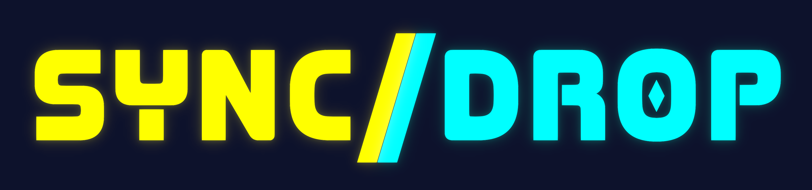
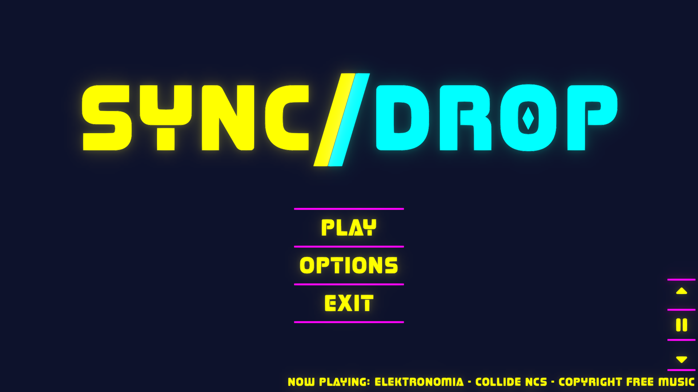
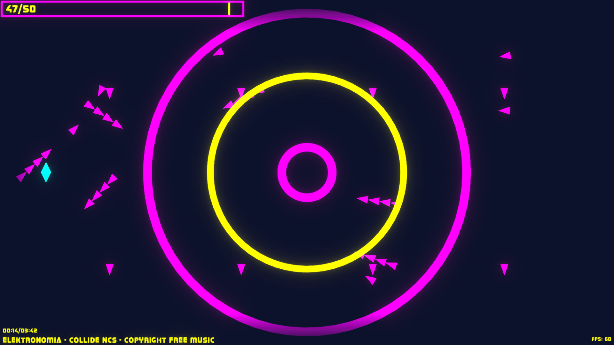
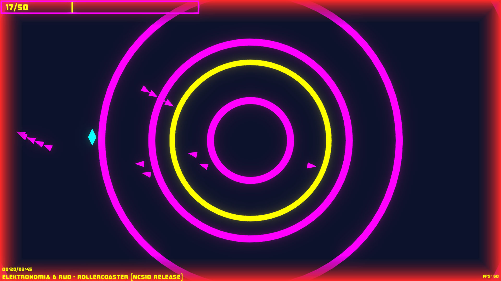

A free, procedural rhythm game.
SyncDrop is a 2D rhythm bullet hell where you can drop any audio file into the game and it just works. No beatmaps, just drop the file and play your favorite songs instantly. Dodge bullets and dash through deep bass shockwaves to win!


